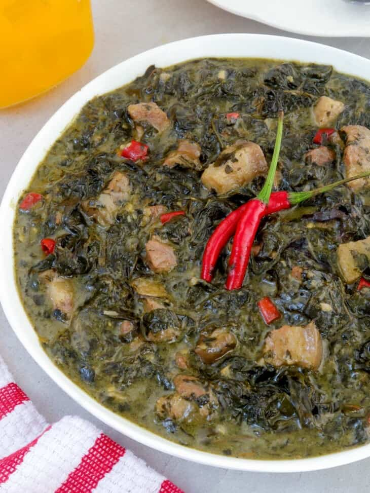

Laing

Description
A good Filipino dish from the region of Bicol. It combines dried taro leaves,
coconut milk, pork, and chili peppers. A meaty, smooth dish that everyone will enjoy.
Pairs excellently with rice.
Link to the original recipe (from Kawaling Pinoy)
Ingredients (Measurements in the website linked)
- Dried Taro (or Gabi) Leaves
- Neutral Oil
- Onion
- Garlic
- Ginger
- Pork (preferably the belly)
- Pepper
- Shrimp Paste
- Coconut Milk
- Chili Peppers
- Coconut Cream
- Salt
Steps
-
Shred the taro leaves into pieces into around 3-by-5 inches in size.
-
In a wide pan, heat on medium heat with oil. Add onions, garlic, and
ginger to cook, stirring occasionally until aromatic.
-
Add pork and cook until golden brown. Season with salt and pepper
to taste. Add shrimp paste and cook for 2 minutes.
-
Add the coconut milk and simmer. Then add the chili peppers.
-
Add the taro leaves, pushing them into the liquid to moisten.
Simmer without stirring for about 20 minutes.
-
Add the coconut cream and cook for 15 minutes until dry and fat begins
to render. Season with salt to taste.